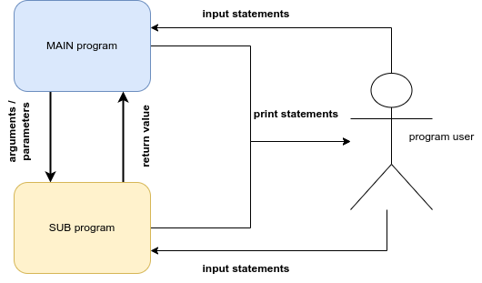

Subprograms
A subprogram is a block or segment of organized, reusable, and related statements that perform some action.
It is essentially a program within a program. Recall an earlier lesson on representing algorithms as to-do lists. One algorithm represented the steps necessary to get to class. One of those steps was eat breakfast. We noted how we could zoom in to that step and identify the sub-steps necessary to complete the eat breakfast step. Control flow shifted from the main to-do list to the eat breakfast to-do list when the eat breakfast step was encountered, and then returned to the main to-do list at the point where it left earlier. We can consider the eat breakfast to-do list as a subprogram.
Very few real programs are written as one long piece of code. Instead, traditional imperative programs generally consist of large numbers of relatively simple subprograms that work together to accomplish some complex task. While it is theoretically possible to write large programs without the use of subprograms, as a practical matter any significant program must be decomposed into manageable pieces if humans are to write and maintain it.
Subprograms make the construction of software libraries possible.
A software library (or just library) is a collection of subprograms, or routines as they are sometimes called, for solving common problems that have been written, tested, and debugged.
Most programming languages come with extensive libraries for performing mathematical and text string operations and for building graphical user interfaces. These languages allow programmers to include library routines in their code. Using subprograms from the library speeds up the software development process and results in a more reliable finished product.
When a subprogram is invoked, or called, from within a program, the calling program pauses temporarily so that the called subprogram can carry out its actions. Eventually, the called subprogram will complete its task and control will once again return to the caller. When this occurs, the calling program wakes up and resumes its execution from the point it was at when the call took place.
Subprograms can call other subprograms (including copies of themselves as we will see later). These subprograms can, in turn, call other subprograms. This chain of subprogram invocations can extend to an arbitrary depth as long as the bottom of the chain is eventually reached. It is necessary that infinite calling sequences be avoided, since each subprogram in the chain of subprogram invocations must eventually complete its task and return control to the program that called it.
Subprograms are broken down into two types: methods and functions.
A method is a subprogram that performs an action and returns flow of control to the point at which it was called. A function is similar; however, it returns some sort of value before flow of control is transferred back to the point at which it was called.
For example, a method may simply display some useful information about a program to the user (e.g., a program’s help menu), while a function may compute some numeric value and return it to the user. Subprograms in Python are generally just referred to as functions, regardless of whether or not they return a value. For the remainder of this lesson, we will refer to subprograms as functions.
In Python, functions must formally be declared prior to their use. That is, the body or content of a function must be specified in a program before it can be called. The syntax for declaring a function is as follows:
def function_name(optional_parameters):
function_bodyThe keyword def is a reserved word in Python and is used to declare functions. A function name can be any valid identifier. As you will see later, an identifier is a name used to identify a variable, function, or other object (note that objects will be discussed later). The function name must be followed by a set of parentheses containing optional parameters.
Parameters allow for values (constants, variables, expressions, and so on) to be passed in to a function. They form the input needed for the function to execute properly.
For example, a function may accept two values, calculate their average, and return the result to the caller. The function definition (or header) is terminated with a colon (:). The body of a function (i.e., its enclosed statements) is indented.
Here is an example of a simple function that displays a line of text:
def sayHelloWorld():
print("Hello World!")This function is called sayHelloWorld and takes no parameters. It simply displays the text, “Hello world!”
Once its been defined, we can then progress to using this function as many times as we’d like. To call this function, we simply need to specify its name and the values of its parameters (if any) as follows:
sayHelloWorld()Or if we want to call it multiple times:
sayHelloWorld()
sayHelloWorld()
sayHelloWorld()Formally, functions have a header and a body. The header is the statement that defines the function (i.e., with the def keyword). The header of a function is often called its signature, and provides its name and any parameters. Function parameters help a function complete its task by providing input values. In fact, each call to a function possibly means a new set of parameters. The body of a function describes what the function does. This is the code within the function. Some functions compute and return a result, called the return value, that is returned via the return keyword.
Here’s a function that accepts two parameters and calculates (and returns) the average of the two:
def average(a, b):
return (a + b) / 2And here are some examples of how it could be called:
a = average(5, 11)
b = average(4, 6)
c = average(22, 21)
print(f"a = {a}, b = {b}, c = {c}")Note the return keyword. Its purpose is to return whatever expression comes after it. The statement return (a + b) / 2 returns the result of the expression (a + b) / 2 to the caller (one of which happened at the statement average(5, 11)).
Here’s a pow function that returns the exponentiation of one parameter by another:
def pow(x, y):
return x ** yRecall that x ** y in Python implies exponentiation and means x raised to the power y. Formally, we call ** the exponentiation operator. Operators will be discussed in detail in the next section.
Here’s sample output of this function with various parameters:
a = pow(2, 8)
b = pow(10, 4)
c = pow(3, 5)
print(f"a = {a}, b = {b}, c = {c}")See how many of the following subprograms you can design and use.
double(x) # a function to return double of the argument it receives
power(x, y) # a function to return the result of x raised to the
# power of y
average(x, y, z) # return the average of its arguments
concat(a, b) # a function to return a string concatenation of its
# arguments
isin(a, b) # a function to tell whether the string a is a part of b
max(x, y) # return the larger of two values
iseven(x) # return a whether the argument is even or not
squarenum(x) # return square of its argument
cubenum(x) # return cube of its argument
divide(x, y) # return the quotient of x and y
factorial(x) # return the result of x!
isprime(x) # return whether x is a prime number or not
countvowels(a) # return number of vowels in a string
fibonacci(x) # return the xth fibonacci number
celstofahr(x) # change a temperature from celsius to fahrenheit
lbstokgs(x) # change pounds to kilogramsRecall that designing and using a function are two different parts of working with subprograms. Make sure that you are comfortable with tackling either part of the process.
Below are a few more programs that you can try to design and use. These programs will not require any return statements.
greet(a) # a function to print out a greeting for the name a
printmulttable(x) # print out all values of [1-10] * x
printstarsquare(x) # print out a square of size x of * characters
displaymenu() # print out the items in a fictional menu
printcurrentdate() # print out the current date.Figure 1 should help clarify some of the terminology that we have discussed so far that might be a little confusing.

Print statements are used to provide information to the user of the program. They can be executed by either the main program or any subprogram and their purpose is to produce some kind of information on the computer screen for the user of the program.
print("this only has value to the person reading this screen")Input statements are used to gather information from the user of the program. They can also be executed by any part of the program i.e. main program or subprogram and their sole purpose is to prompt the user for some kind of information that will be used by the program later on.
x = input("I need some information from the user of this program")Arguments / Parameters are pieces of information that a subprogram requires to even start its execution. They can either be provided by the main program or another subprogram. You will typically see these arguments whenever the subprogram is being called/used. However, the subprogram should anticipate the reception of these arguments and will typically have a variable place holder for them.
# in this example, x is the argument. The DESIGNER of the function knows
# that in order for the function to even begin, it will need some piece
# of information and they will temporarily store that information in the
# variable x
def double(x):
ans = 2 * x
return ans
# Once the function is defined, the DESIGNER of the main program is now in
# charge of giving a value that will be mapped to x. In the lines below,
# 5, 9, and b are the arguments that will be mapped to x over three
# different executions of the function.
a = double(5)
b = double(9)
c = double(b)Return values are pieces of information that a subprogram wants to give back to the main program (or another subprogram). These values are typically the result of some kind of calculation or process. You will find return statements at the end of a subprogram. The main program (or subprogram) that is using the subprogram in question should anticipate the reception of a return value by either storing it in a variable or using the value as part of an expression.
# in the code snippet above, note that ans is the value that is
# returned.
# the value actually in ans will depend on what argument was passed into
# x when the "double" function is called